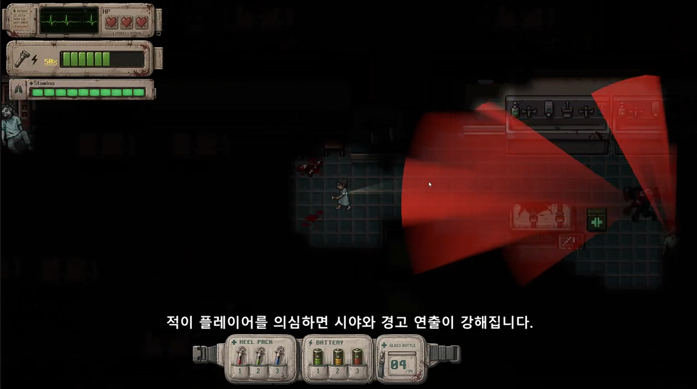

2D · Stealth Horrorhorrorescape / HorrorStealth
Unity 6 URP 2D 기반 탑다운 스텔스 호러 프로토타입. "안 보여서 답답한 어둠"이 아니라 플레이어가 빛과 소리로 위험을 읽고 판단하게 만드는 것이 목표였습니다.
- 역할
- 1인 개발 (기획, gameplay/client 구현, 적 AI 흐름, 씬/프리팹 구성, UI, 문서화, 빌드 패키징)
- 핵심기능
- 5F→1F 층별 탈출 흐름, 적 순찰/탐색/추격 및 시야·소음 반응, 인벤토리/퀵슬롯/손전등·배터리 흐름
- 문제→판단
- 어둠·적 시야·소음 반응이 불명확하면 공포가 아닌 억울함이 됨 → 손전등, 로컬 조명, 포그오브워, 적 시야, 소음 반응을 분리해 피드백 조절
- 근거
- C# 385개, 씬 8개, 문서 45개, 테스트/검증 스크립트 90개, EditMode 108/108 통과 기록
Unity 6 URP 2D
Enemy Perception/Chase
Inventory System
EditMode Test 108/108